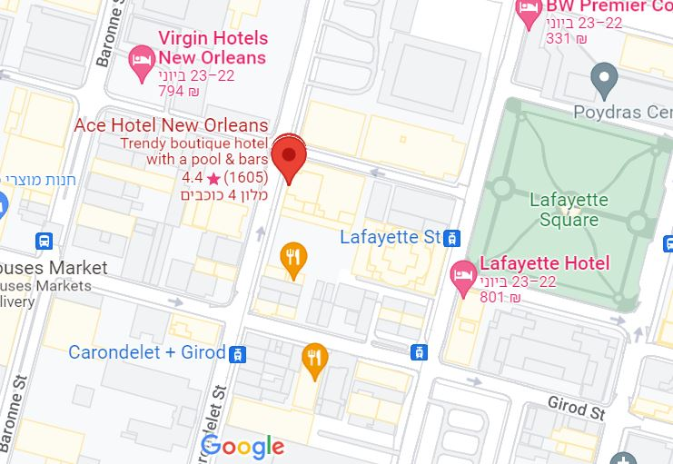

Floats at the Mardi Gras parade
Many of today’s floats are hand-painted by artists who work year-round designing and
building
the creations you see each year.


The holiday of Mardi Gras is celebrated in all of Louisiana, including the city of New Orleans.
Celebrations
are concentrated for about two weeks before and through Shrove Tuesday, the day before Ash Wednesday
(the
start of lent in the Western Christian tradition). Usually there is one major parade each day
(weather
permitting); many days have several large parades. The largest and most elaborate parades take place
the
last five days of the Mardi Gras season. In the final week, many events occur throughout New Orleans
and
surrounding communities, including parades and balls (some of them masquerade balls).
The parades in New Orleans are organized by social clubs known as krewes; most follow the same
parade
schedule and route each year. The earliest-established krewes were the Mistick Krewe of Comus, the
earliest,
Rex, the Knights of Momus and the Krewe of Proteus. Several modern "super krewes" are well known for
holding
large parades and events, such as the Krewe of Endymion (which is best known for naming celebrities
as
grand
marshals for their parades), the Krewe of Bacchus (similarly known for naming celebrities as their
Kings),
as well as the Zulu Social Aid & Pleasure Club—a predominantly African American krewe. Float riders
traditionally toss throws into the crowds. The most common throws are strings of colorful plastic
beads,
doubloons, decorated plastic "throw cups", Moon Pies, and small inexpensive toys. Major krewes
follow
the
same parade schedule and route each year.
While many tourists center their Carnival season activities on Bourbon Street, major parades
originate
in
the Uptown and Mid-City districts and follow a route along St. Charles Avenue and Canal Street, on
the
upriver side of the French Quarter. Walking parades - most notably the Krewe du Vieux and
Chewbacchus -
also
take place downtown in the Faubourg Marigny and French Quarter in the weekends preceding Mardi Gras
day.
Mardi Gras day traditionally concludes with the "Meeting of the Courts" between Rex and Comus.


Walk-On's is a place where over-the-top enthusiasm and culture is the daily norm. What sets us apart from all others though, is our authentic, mouthwatering Louisiana cuisine prepared fresh in a from-scratch kitchen.
Brimming with style and grounded in our community, Sheraton New Orleans Hotel is the perfect home base for your downtown escape.Our hotel is steps from the buzz of the French Quarter, and offers seamless access to notable NOLA points of interest. Relax in our refined guest rooms and suites,and kick start your day at Starbucks® in our atrium lobby or wind down with refreshing cocktails and local cuisine at Pelican Bar.
Ace hotel is a stone’s throw from the French Quarter, in the soul of the Deep South. It has rooms with everything that you need, with room for more in our Ace suite, coner studio suite, large, double, medium, patio and accessible double rooms. Enjoy our world-class dining and drinks conceived by award-winning chefs, all under one roof.
Rich in history and personality, New Orleans is unlike any other US city. Honoring its spirit and elegance, The Ritz-Carlton, New Orleans invites visitors to its French Quarter retreat, set within a 1908 Beaux Arts building. Here, one can bask in the silence of the hotel’s beautiful courtyard, experience the mysticism of the city through the spa’s Voodoo Ritual or learn how to play the trumpet with in-house jazz musician Jeremy Davenport.
Revel in the advantages of ownership of a parking condominium. No more circling the block and waiting or renting parking at high monthly fees. Private Parking lets you invest in the convenience of your own secure space.
There are a bajillion paths to take through LCM. But the easiest way to plot a course is to choose the exhibits you want to see or the things you want to learn. Walk through the reeds or brush up on your reading. Learn the songs of this city or make your own music. The world is your oyster. Hey, you can learn about those too!
The World Famous Museum of Death was founded in June, 1995 when JD Healy and Cathee
Shultz
decided to fill the void in death education in this country and made death their life’s
work.
The Museum of Death experience is a self guided tour that includes hundreds of items on
display.
Join Voodoo Queen Bloody Mary and her mystic staff for tours, ghost hunting, séance, psychic readings, events and mystic shopping in a 200-year-old haunted house featured on Ghost Adventures, Paranormal Lockdown and Buzzfeed Unsolved. Explore even further with sightseeing, Voodoo and weddings.